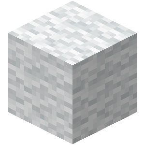
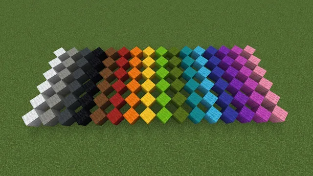

La lana es un bloque usado principalmente para craftear diferentes objetos
Se consigue matando a una oveja o dandole click derecho con unas tijeras
La lana se puede romper mas rapido con unas tijeras
Existen distintas variantes del bloque de lana, estas variantes simplemente cambia el color
Estas variantes se consiguen poniendo la lana y un tinte en una mesa de crafteo
